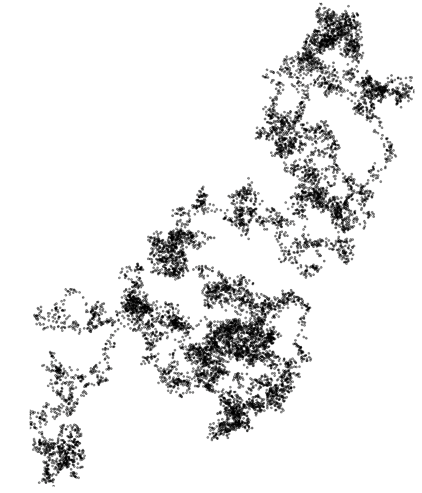

Monad-Bayes is a library for probabilistic programming written in Haskell.
Define distributions as programs
Perform inference with a variety of methods
Distributions over anything including plots, diagrams, JSONs and streams

(A sample from a distribution over diagrams, built by transforming a distribution over infinite lists, i.e. a random walk)